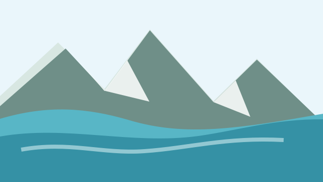
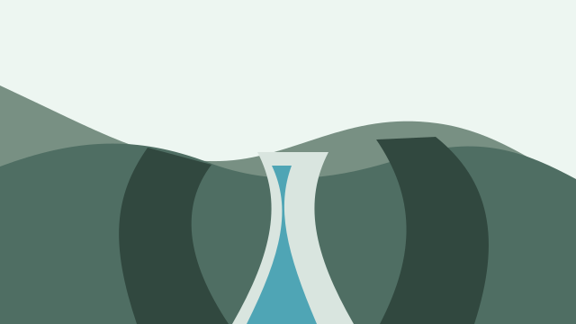
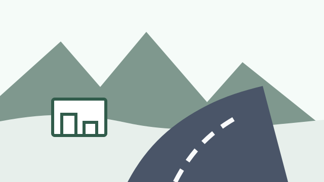
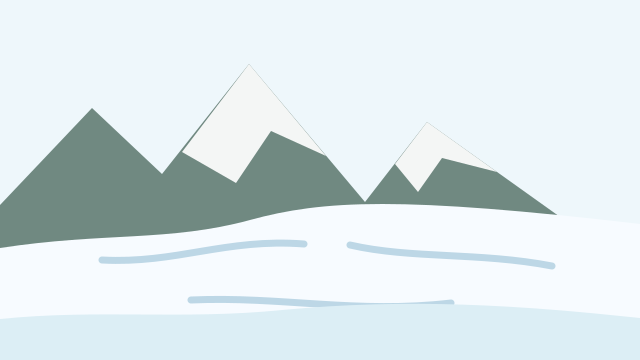
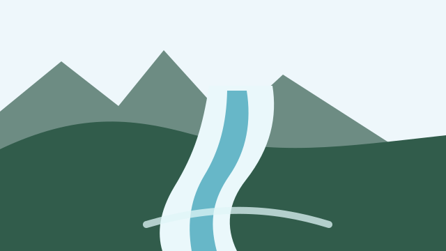

Arrival Day
Route: Toronto -> Calgary
Use this as a buffer day. Settle near Calgary and protect sleep.
Offline: Save hotel, rental car, and arrival details.
EscapeWith.Ady | @escapewith.ady
Calgary -> Canmore -> Banff -> Lake Louise -> Icefields Parkway -> Jasper Area
Pick the days that fit your trip. Save this guide offline before you go.
This opens your browser print dialog. Choose "Save as PDF" to download the complete guide.
This is a route-based planner. Use the day modules in order, or pick only the days that match your trip. Download offline maps, screenshot bookings, and verify parking, shuttle, pass, road, and activity rules before final use.
Land, pick up the car, grab supplies, and settle into Canmore as the main base.
Use Banff town, Lake Minnewanka, and the Gondola as the flexible warm-up route.
Prioritize shuttle or parking timing first, then keep the lake stops relaxed.
Start early, save scenic stops offline, and leave room for weather or road delays.
Use the final leg as a scenic reset and cut stops if timing gets tight.
Route: Toronto -> Calgary
Use this as a buffer day. Settle near Calgary and protect sleep.
Offline: Save hotel, rental car, and arrival details.
Plan: Calgary hot air balloon and Calgary circus / event.
Keep the middle of the day flexible for food, supplies, and rest.
Book: Use your confirmed balloon operator and exact event ticket provider.
NoWaitsy: Check restaurants or cafes before heading out.
Route: Calgary -> Canmore.
Plan: Kananaskis helicopter tour.
Verify heli base, check-in time, and Kananaskis pass needs before final use.
Plan: Lake Minnewanka Cruise, Open Top Touring, Banff Gondola.
Stacked activity day. Protect check-in times and plan food before crowds hit.
Book: Use the activity links below.
NoWaitsy: Banff gets crowded fast. Check before walking into long waits.
Plan: Moraine Lake shuttle, Lake Louise shuttle, flexible return.
Verify exact pickup point, parking lot, check-in rules, and return window.
Offline: Screenshot shuttle reservations and pickup maps.
Plan: Peyto Lake, Columbia Icefield Adventure / Skywalk, scenic stops.
Fill fuel first. Keep stops realistic and do not rely on cell signal.
Stay: Icefields / Jasper area / The Crossing.
Route: Icefields/Jasper area -> Calgary.
Use this as a scenic reset day. Add Zipline Mount Norquay only if timing works.
Route: Calgary -> Airport.
Keep this simple. Avoid mountain driving unless absolutely necessary.
Use these as activity references, not fixed personal timings. Book with the confirmed provider and screenshot every reservation.
Use this as a shortlist, not a fixed reservation plan. Check current hours, seasonal openings, reservations, and live waits before going.
Coffee: Monogram Coffee; Phil & Sebastian Coffee Roasters.
Hangouts: Inglewood; East Village; 17th Avenue SW.
Food: Ten Foot Henry; Major Tom; Shokunin; Nupo; Lulu Bar; Calcutta Cricket Club; Rouge.
Bars: Major Tom; Lulu Bar; Proof; Shelter.
Best use: proper meals, coffee, supplies, and a relaxed night before or after the mountains.
Coffee: Eclipse Coffee Roasters; Communitea Cafe; Beamer's Coffee Bar.
Hangouts: Main Street Canmore; Policeman's Creek boardwalk; The Grizzly Paw patio.
Food: Rocky Mountain Flatbread; The Grizzly Paw Pub; Sauvage; Tavern 1883; BLAKE.
Bars: The Grizzly Paw Brewing Company; Tavern 1883; Where The Buffalo Roam Saloon.
Best use: calmer dinners and coffee breaks when Banff is too packed.
Coffee: Whitebark Cafe; Wild Flour Bakery; Good Earth Coffeehouse.
Hangouts: Banff Avenue; Bow River walk; Rundle Bar; Park Distillery.
Food: Lupo; Bluebird; Park Distillery; Chuck's Steakhouse; Sky Bistro; Tooloulou's; The Maple Leaf.
Bars: Park Distillery; Three Bears Brewery; Rundle Bar; High Rollers.
Best use: check NoWaitsy before lunch, dinner, coffee runs, and post-gondola food plans.
Coffee: Trailhead Cafe; Guide's Pantry; Lake Agnes Tea House when hiking season allows.
Hangouts: Lake Louise lakeshore; Fairmont Chateau Lake Louise lounges; Lake Agnes Tea House.
Food: Lakeview Lounge; Fairview Bar & Restaurant; Alpine Social; The Station Restaurant; Plain of Six Glaciers Tea House when open.
Bars: Alpine Social; Lakeview Lounge.
Best use: limited, reservation-heavy food area. Pack snacks and verify seasonal tea house openings.
Coffee: pack coffee/snacks before leaving Canmore; Saskatchewan Crossing cafe if open; Columbia Icefield Discovery Centre cafe if open.
Hangouts: Bow Lake pullout; Peyto Lake viewpoint; Columbia Icefield Discovery Centre.
Food: The Crossing Resort; Columbia Icefield Discovery Centre; packed lunch.
Bars: The Crossing Resort pub/lounge if open.
Best use: services are sparse. Treat every open washroom, fuel stop, and food stop as useful.
Coffee: Bear's Paw Bakery; Coco's Cafe; Sunhouse Cafe.
Hangouts: Downtown Jasper; Patricia Street; Jasper Brewing Company.
Food: Jasper Brewing Company; Tekarra Restaurant; Syrahs of Jasper; Evil Dave's Grill; The Raven Bistro.
Bars: Jasper Brewing Company; The De'd Dog Bar & Grill; The Emerald Lounge.
Best use: verify current openings and road access, especially if your route only reaches the Jasper corridor.
Do not assume parking and park entry are the same thing. Parking, shuttles, reservations, and activities may be separate.
Approximate pins are included for import into compatible map apps. Verify exact trailheads, parking, and shuttle locations before driving.
Use this as a south-to-north visual timeline. The map links open Google Maps; still verify exact parking, trailheads, and road conditions before driving.

Easy roadside lake stop before Peyto. Good for a calm first Icefields Parkway view.
Open in Google MapsIconic aerial-style lake view. Build in time for parking, walking, and weather shifts.
Open in Google Maps
Short canyon stop with strong texture and moving water. Watch footing and timing.
Open in Google Maps
Useful route reset for food, fuel checks, washrooms, and deciding how many stops to keep.
Open in Google Maps
Main glacier stop and activity hub. Verify check-in location, tickets, weather, and road conditions.
Open in Google Maps
Quick waterfall pullout north of the Icefield area. Stop only if traffic and parking feel safe.
Open in Google MapsAdd these only if the route is pushing farther toward Jasper and you are not rushing the Calgary return.
Open Athabasca Falls in Google Maps


Photo previews are for planning. Open AllTrails, then verify access, closures, shuttle rules, and trail conditions with Parks Canada before hiking.
Mountain towns get crowded fast, especially around lunch, dinner, cafes, and popular downtown areas. Before heading out, use NoWaitsy to check nearby places, avoid long waits, and make faster decisions.
Special trip tool
NoWaitsy helps you see nearby restaurant waits before you choose where to eat. Search a specific branch or area, compare recent wait labels, check freshness and confidence, then add a quick crowd-reported update for the next person.
Use community references for planning patterns, but verify official rules, fees, closures, shuttles, and passes before final use.